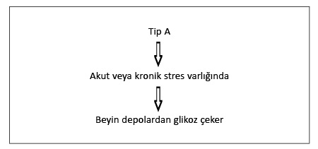

Beynin stres tepkisinin
devre dışı kalması
Hepimiz “Çocuğu döversen arsız olur” deyimini biliriz. Gerçekten de aile içi fiziksel şiddete maruz kalan birçok çocukta bu durumu gözlemleyebiliriz. İlk şiddete uğradıklarında yoğun fiziksel ve psikolojik tepki gösteren bu çocukların verdikleri tepkinin yoğunluğunda bir müddet sonra azalma olur. Ve çocuğu “terbiye” etmek amacıyla kullanılan bu yöntem hiçbir işe yaramaz. Bilim insanları bu durumu “habitüasyon” kavramıyla açıklarlar. Yani çocuk psikolojik ve fiziksel olarak şiddetin yarattığı strese alışır ve başlangıçta gösterdiği stres tepkisini göstermez (B grubu). Tabii ki bu durum her çocuk için geçerli değildir. Bazı çocuklar ise şiddete her zaman aynı yoğunlukta tepki verir. Yani onların stres sistemleri duruma adapte olmaz (A grubu). Psikonörolojik bir perspektiften baktığımızda A grubundaki çocukların stres sistemlerinin her şiddet gördüklerinde devreye girip yoğun miktarda adrenalin ve kortizol ürettiklerini söyleyebiliriz.
B grubundaki çocukların stres sistemleriyse bir müddet sonra “çocuğu korumak adına” duruma adapte olur ve stres hormonu üretmemeye başlar. Bu çocuklarda gözlemlediğimiz “arsızlık” ya da “umursamazlık” stres sistemlerinin devre dışı kalmasından kaynaklanır.
Neden bazılarının stres sistemi devamlı aktifken (A grubu), bazılarınınkinin de duruma adapte olduğunu (B grubu) araştıran bilim insanları bunun kortizol hormonundan kaynaklandığını belirtiyorlar. Strese girdiğimizde birçok hormonun yanı sıra salgılanan kortizol hormonu, toplumda bilinenin aksine bizi strese sokmaz. Tam tersine kortizol, stres esnasında salgılanan ve diğer hormonların etkisini azaltan, “yatıştırıcı” bir hormondur. Her ne kadar uzun vadede vücuda zarar verse de, stres anında tekrar sakinleşmemizi sağladığından son derece önemlidir. Bu anlamda kortizolü klasik bir sakinleştiriciye benzetebiliriz. Ve nasıl yüksek miktarda sakinleştirici ya da ağrı kesici ilaç alanlarda bir müddet sonra vücut o miktara alışıp sakinleşmiyorsa, aynı şekilde kortizole karşı da bir duyarsızlık geliştirebilir.
Vücudun bir kortizol hafızası olduğundan yola çıkan bilim insanları, bu hormonun kronik bir şekilde yüksek miktarda salgılandığı durumlarda etkisini yitirdiğini ifade ediyorlar. Stres sistemini sakinleştiren bu hormonun etkisini yitirmesi beraberinde stres sisteminin de devreden çıkmasını getiriyor (Brain-Pull-yetmezliği). Burada yine beynin ne kadar karmaşık ve mükemmel çalıştığını görüyoruz.
Stres sistemini sakinleştiren kortizol hormonu işlevini yitirdiğinde beyin stres sistemini devre dışı bırakarak kendisini ve böylelikle de bütün organizmayı koruma altına alıyor. Beyin, kortizol hormonunun işlevini yitirmiş olmasına rağmen stres sistemini aktif bir halde tutsaydı, bu kişinin ölümüyle sonuçlanırdı. Yani beyin var olan olumsuz şartlarda organizmanın hayatta kalabilmesi için en doğru kararı vererek, stres sistemini devre dışı bırakıyor. Stres sisteminin devre dışı kalmasıysa beynin enerji ihtiyacı duyduğunda depoları kullanamaması anlamına geliyor.
BRAIN-PULL / BEYNİN ÇEKİM GÜCÜ

BRAIN-PULL INKOMPETENS / BEYNİN ÇEKİM GÜCÜ YETMEZLİĞİ

Tekrar aile içi şiddet gören çocuklara dönersek; stres sistemleri var olan şiddete adapte olmayan ve mütemadiyen kortizol üreten A grubu çocuklarının metabolizması kitabın bir önceki bölümünde açıkladığım şekilde işler. Son derece aktif işleyen stres sistemi, beyinde glikoz ihtiyacı oluştuğunda bu enerjiyi depolardan çeker (Brain-Pull). Kişi daha sonra yemek yiyerek tekrar bu depoların dolmasını sağlar. Bu kategoriye giren çocukların şişmanlama tehlikesi yoktur. Ama daha önce de belirttiğim gibi, bu durum çocukların sağlıklı olduğu anlamına gelmez. Stres sisteminin devamlı aktif olması, yani vücutta devamlı yüksek miktarda kortizol bulunması beraberinde başka rahatsızlıklar getirir. Bu çocuklar zayıf ama sağlıksızdırlar. B grubu çocuklarda ise beyin bir müddet sonra yüksek miktardaki kortizole karşı bir bağışıklık kazanır ve organizmanın yararına stres sistemini devre dışı bırakır. Stres sistemi devre dışı kalan bu çocukların kanında fazla miktarda kortizol yoktur ama onlar kaçınılmaz bir şekilde şişmanlayacaklardır. Stres sisteminin devre dışı kalması, beynin enerji ihtiyacı duyduğunda olağanüstü hal ilan edememesi, yani depolara ulaşamaması anlamına gelir.
Ali ve Ahmet neden farklı tepki veriyor?
Ali ile Ahmet 12 yaşlarında, aynı mahallede oturan ve aynı sınıfta okuyan iki arkadaş. İkisi de aile içi şiddete maruz kalıyor. Yaşanan şiddet Ali’nin kilosunu etkilemiyor, çünkü o A grubundan. Ahmet’le karşılaştırıldığında daha gergin olması ve kanında yüksek miktarda kortizol bulunmasının nedeni, onun stres sisteminin devamlı aktif olmasından kaynaklanıyor. Ahmet ise kilolu bir çocuk. Korkma Ye! kitabımda belirttiğim yeme bağımlılığının bütün özelliklerini taşıyor. Ahmet’in yaşanan şiddete kilo alarak tepki vermesi onun bir B grubu insanı olmasından kaynaklanıyor.
İnsanların benzer şartlarda yaşarken stres sistemlerinin neden farklı tepki verdiğini yakından incelediğimizde, bunun birçok faktöre bağlı olduğunu görürüz.
Birincil olarak yaşanan stresin yoğunluğu belirleyici olabilir. Yani Ali yaramazlık yaptığında ebeveynleri tarafından birkaç tokatla cezalandırılıyor, Ahmet ise bir nevi fiziksel şiddete maruz kalıyorsa, o zaman Ahmet’in stres sisteminin devre dışı kalmasının stresin yoğunluğundan kaynaklandığını söyleyebiliriz. Ama Ali’nin ve Ahmet’in yaşadığı şiddetin aynı yoğunlukta olduğunu ve ikisinin de aile içinde zaman zaman birkaç tokatla cezalandırıldığını varsayalım. Eğer Ali yalnızca ders çalışmadığında bu şiddete maruz kalıyor, Ahmet ise ebeveynlerinin keyfine göre cezalandırılıyorsa, bu durumda Ahmet’in yaşadığı şiddet Ali’ninkiyle karşılaştırıldığında çok daha yüksektir. Çünkü Ali şiddetin önkoşulu hakkında bilgi sahibi olduğundan nispeten bir kontrol mekanizmasına sahiptir. Ders çalıştığında şiddet görmeyeceğini bilir. Ahmet ise kontrol sahibi değildir. Bu durumda Ahmet’in stres sisteminin devre dışı kalmasının nedeni yaşadığı şiddetin fiziksel yoğunluğu değil, o şiddetin öngörülemez ve kontrol edilemez olmasının yarattığı psikolojik şiddettir.
Ahmet’in yaşadığı şiddetle Ali’nin yaşadığı şiddet arasında hiçbir fark olmadığını varsayalım. İkisi de yalnızca ders çalışmadıklarında şiddete maruz kalıyorlar ve bu şiddet “yalnızca birkaç tokatla” sınırlı. Bu durumda Ahmet’in stres sisteminin devre dışı kalmasının nedeni onun hassas “doğasında” yatar. Çünkü Ahmet genetik ve ruhsal yapısı bakımından Ali’ye göre son derece hassastır ve dolayısıyla yaşanan şiddet “sınırlı” ve öngörülebilir olmasına rağmen onda yoğun bir stres tepkisine yol açar. Bu hassasiyetten dolayı Ahmet’in stres sistemi bir müddet sonra devre dışı kalarak, onun hayatta kalmasını sağlar. Ahmet’in bunun karşılığında ödediği bedel şişmanlıktır. Görüldüğü üzere insanlarda stres sisteminin devre dışı kalıp şişmanlamalarına yol açan faktörler son derece çeşitli ve karmaşıktır. Ama gerçek neden her zaman kişinin yaşadığı strestir.

Yukarıdaki şekilde Ali tip A, Ahmet tip B grubuna girmektedir
(BKİ: Beden Kitle İndeksi).
Beynin çekim gücü (Brain-Pull) devre dışında
Bir önceki bölümden hatırlayacağınız gibi, beyin temel gıdası olan glikozda bir eksiklik hisseder hissetmez stres sistemini devreye sokarak vücuttan glikoz çeker. Peki ama Ahmet’in beyni stres sistemini devre dışı bıraktığında kendi glikoz ihtiyacını nasıl karşılar?
Beyin çekim gücü devre dışı kaldığında glikoz ihtiyacını karşılayabilmek için beden çekim gücünü (Body-Pull) devreye sokar. Bu durumda vücuttaki depoları kullanamayan beyin ihtiyaç duyduğu enerjiyi dışarıdan alır. Yani kişi yemek yiyerek beyninin glikoz ihtiyacını karşılar. Önceden yalnızca bedenin ihtiyacını karşılamak için yemek yiyen kişi, şimdi beynin de ihtiyacını dışarıdan karşılamak zorunda olduğu için daha fazla yemek zorunda kalır. Bu fazla tüketimin bir yan etkisi olarak da şişmanlar. “Peki ama neden daha fazla yemek zorunda kalıyoruz? Neden eskiden yediğimiz kadarıyla ya da daha azıyla yetinmiyoruz? Böylelikle beyin ihtiyaç duyduğu enerjiyi alır ve biz de şişmanlamayız?” diye düşünüyor olabilirsiniz. Ama ne yazık ki beynin ve bedenin karmaşık yapısı buna izin vermiyor.
İnsülin hâkimiyetinin yitimi
Kitabın ilk bölümünde beynin stres sistemi sayesinde yalnızca stres hormonları salgılamadığını, aynı zamanda pankreası da kontrol ettiğini belirtmiştim. Tekrar edersek; vücuda glikoz aldığımızda beyne kanda yüksek miktarda glikoz olduğu sinyali gider. Bu durumda beyin önce kendinin glikoz ihtiyacını kontrol eder. Eğer yeterince glikoz yoksa pankreasa insülin üretimini durdurmasını emreder ve önce kendi ihtiyacını giderir. Sonrasında ise pankreasa insülin üretme emri verir. Üretilen insülin kandaki glikozun parçalanıp yağ hücrelerinde ve kaslarda depolanmasını sağlar. Gelin şimdi beynin çekim gücü devre dışı kaldığında neden fazla yemek yediğimize bakalım.
Beyin, çekim gücünün zayıflaması ya da devre dışı kalması durumunda pankreas üzerindeki hâkimiyetini yitirir. Böylelikle daha önce kendi kontrolünde tuttuğu bedenle arasında bir enerji rekabeti başlar. Bu rekabette beyin için enerjiye ulaşmak gittikçe zorlaşır. Çünkü beynin hâkimiyetinden kısmen ya da tamamen çıkmış olan pankreas keyfince insülin üretir. Kanda fazla miktarda bulunan insülin sayesinde kaslara ve yağ dokularına fazla enerji depolanır ve beynin ihtiyacı karşılanmaz. Bu durumda beyin kendi ihtiyacını karşılayabilmek için kişiyi daha fazla yemek yemeye teşvik eder. Bunu basit bir örnekle somutlaştırabiliriz: Normalde her sabah iki dilim ekmek yiyorsunuz. Beyninizin çekim gücünde bir sorun olmadığında yediğiniz bir dilim ekmeğin enerjisi beyninize, diğer diliminki de bedeninize gider. Ama çekim gücü zayıfladığında beyne yalnızca yarım dilim ekmeğin enerjisi gider. Çünkü kandaki yüksek insülin daha erken davranır. Bu durumda beynin ihtiyacını karşılamak için üç dilim ekmek yemek zorunda kalırsınız. Buna direnip iki dilimde ısrar ederseniz kısa bir süre sonra mutlaka bir ara öğün yersiniz. Yani beynin ihtiyacını karşılayabilmek için daha fazla yemek zorunda kalırsınız.
C planı
Günümüzde birçok insanın yaşadığı kronik stres beynin stres sistemini ya zayıflatır ya da devre dışı bırakır. Bu durumla yüz yüze kalmış insanlar kaçınılmaz olarak fazla yemek zorunda kalır. Ama buna rağmen, güzellik ve diyet endüstrisinin kıskacına girmiş birçok insan kendisiyle ya da daha doğrusu beyniyle amansız bir mücadeleye girer. Bu insanlar, beyin çekim güçleri devre dışı kalmasına rağmen vücutlarına fazladan yiyecek almazlar ya da diyet yaparlar.
Daha önce de belirttiğim gibi, beyin son derece karmaşık ve mükemmel işleyen bir sistemdir. Herhangi bir sorun olmadığında çekim gücü (Brain-Pull) sayesinde glikoz ihtiyacını giderir. Kendi çekim gücünde bir sorun yaşandığındaysa beden çekim gücünü (Body-Pull) devreye sokar. Burada da bir sorun yaşandığında, yani beyin yeterince glikoz alamadığında, son olarak da C planını devreye koyar. Bu beynin final stratejisidir. Bu stratejide beyin artık bedenle ya da egoyla herhangi bir uzlaşmaya girmez ve onlardan bağımsız bir şekilde enerji tasarrufuna geçer. Önce çok fazla enerji tüketen ama hayatta kalmamız için elzem olmayan işlevlerini devre dışı bırakır. Mesela vücut ısısı düşürülür, kasların dinçliği düşürülür, partner arayışı ve seks ihtiyacı azaltılır, yaraların iyileşmesi geciktirilir, çocuklarda bedensel büyüme engellenir, anneler çocuklarını emziremez. Beyin, bu müdahalelerle hayatta kalmamızı sağlar. Bunlar aynı zamanda egoya enerji sağlaması için verilmiş ciddi sinyallerdir. Ama ego “güzellik” ve “estetik” kaygılardan dolayı beyne ihtiyaç duyduğu enerjiyi vermemekte ısrar ederse, bu sefer de beyin final kriz durumuna geçerek kişinin komaya girmesine neden olur. Bu koma hali de aslında egoya verilmiş son bir sinyaldir. Çünkü beyin bu durumda bile hayatta kalmak için elinden gelenin en iyisini yapar. Beynin komaya girip kendisini korumaya aldığı bu duruma “nöroproteksiyon” (nöronları koruma) adı verilir.
Enerjinin son derece kısıtlandığı bu final evrede beynin komaya girmek yerine işlevini devam ettirdiğini düşünelim. İşlevini devam ettirmesi milyonlarca nöronun ölmesi ve beynin geri dönülmez zararlar görmesi anlamına gelirdi. Burada beynin komaya girmesi bütün sistemi kurtarabilmek adına yapabileceği en doğru şeydir.
Morten Rostrup deneyi
Stres ve kilo arasındaki bağlantıyı araştıran Norveçli bilim insanı Morten Rostrup, 1980 yılında normal kilolu, genç ve sağlıklı bir grup Norveçli asker üzerinde bir deney yapar. Deney kapsamında askerler fiziksel ve psikolojik strese maruz kalırlar. Stres sonrasında askerlerin kanındaki adrenalini ölçen Rostrup, askerlerin bir kısmında yüksek (A grubu insanları), bir kısmında da düşük adrenalin (B grubu insanları) değerleri tespit eder. 18 yıl boyunca bu askerlerin kilolarını gözlemleyen Rostrup, şişmanlayan askerlerin büyük çoğunluğunun düşük adrenalinli olduğunu gözlemler. Yani şişmanlayanlar stres tepkileri düşük olan askerlerdir. Obeziteyi anlamamızda yol gösterici olan bu deney bize aynı zamanda kimlerin şişmanlama riski olduğunu da önceden belirleme imkânı tanır.
Ancak şişmanlama riskini önceden belirlemek için ille de bir stres testi yapmak gerekmez. Bunun için aç karnına insülin değerlerinize baktırmanız yeterlidir. Yüksek insülin değeri beynin çekim gücünün zayıfladığının ya da devre dışı kaldığının göstergesidir. Bu değer size yalnızca şişmanlama riskiniz olduğunu değil aynı zamanda da tip-2 diyabet hastası olma riskinizi de gösterir.
Elçin’in dramı
Elçin 25 yaşında, 1,70 boyunda ve 65 kiloda bir kadındır. Çocukluğunda en büyük hayali okumak ve insanlara faydalı bir meslek sahibi olmakken, ailesinin ve özellikle de babasının baskıları sonucunda ilkokuldan sonra okulu bırakmak zorunda kalır. İki ablası da onunla aynı kaderi paylaşmış ve “zamanı geldiğinde” ailenin seçtiği insanlarla evlendirilmişlerdir. Onların hayatlarıyla ilgili hoşnutsuzluklarına yakından tanık olan Elçin aynı şeyin kendi başına gelmemesi için mücadele etse de, bir müddet sonra pes edip kaderine razı olur. İlk yıllar zamanının çoğunu evde annesine yardım etmekle geçirir, sonrasında da zamanını daha iyi değerlendirmek için semtlerindeki çeşitli “elişi” kurslarına gider. Bulunduğu şartlarda birçok insan da kendisiyle aynı kaderi paylaşmaktadır. Onlarla beraber vakit geçirdiğinde bu dünyada kendi sorunuyla yalnız olmadığını hissetmek ona teselli verir.
Hayatına yön verememe, maddi sıkıntılar gibi birçok sorun yaşayan Elçin, bir gün tesadüfen aynı mahallede yaşayan Emir’le tanışır. Her ne kadar ailesinin bu ilişkiyi tasvip etmeyeceğini tahmin etse de, Emir’le bir aşk ilişkisine girer. Bir müddet sonra Emir’in ailesi Elçin’i istemeye gider. Elçin’in babası Emir’i ve ailesini beğenir, ancak Emir’in asgari ücretle çalışmasını bir engel olarak görür. Ev içinde yaşanan birçok tartışma ve gerginlikten sonra baba, Elçin’in Emir’le evlenmesine izin verir.
Ailesiyle girdiği mücadeleyi kazanmış olması ve sonucunda da sevdiği kişiyle evlenmesi Elçin’i mutlu eder. Ancak bir müddet sonra evliliğinde maddi sıkıntılardan kaynaklı sorunlar yaşamaya başlar. Bu sorunların uzun vadede evliliğine ciddi zararlar vereceğini öngören Elçin eşinin de onayıyla iş arar. Kısa bir süre sonra da bir boya fabrikasında işe girer. Birçok insan gibi Elçin’in de harcadığı işgücü ile aldığı ücret arasında dengesizlik vardır. Bu durum onu her ne kadar rahatsız etse de, evdeki gerginliklerin azalması ve eşiyle evde huzurun tekrar oluşması onu memnun eder. Ancak işe girdikten bir yıl sonra Elçin kilo almaya başlar ama bu durumu önce ciddiye almaz. O güne kadar hiç kilo sorunu olmadığından, aldığı birkaç kiloyu da kendiliğinden vereceğine inanır.
Çevresinde kilo sorunu olan insanlarla konuştuğunda yediğine içtiğine dikkat etmesi ve özellikle de karbonhidrattan uzak durması gerektiğini öğrenir. Arkadaşlarının söylediklerini mantıklı bulan Elçin, uygulamaya geçtiğinde birçok sorun yaşar. Bütün “iradesini kullanmasına” rağmen yediklerini kontrol edemez ve gün geçtikçe daha fazla kilo alır. Altı ay daha geçtikten sonra Elçin tam 75 kilodur. İşe başladığı iki yılda 10 kilo alan Elçin, artık disiplinsiz ve iradesiz olduğuna inanır.
Madalyonun öteki yüzü
Kilo sorunu olan diğer herkeste olduğu gibi Elçin’de de sorun “disiplinsizlikten” ya da “iradesizlikten” kaynaklanmaz. Zaten şişmanlamak bir “disiplinsizlik” ve “iradesizlik” sorunu değildir. Öyle olsaydı dünya tarihine geçmiş birçok önemli insan disiplinsiz ve iradesiz olurdu. Winston Churchill, Josef Stalin, Benito Mussolini, Mao Zedong, Fidel Castro ve Hugo Chávez ilk akla gelen şişman insanlar. Sizce dünya tarihini yazmış bu insanların hepsi disiplinsizlik ya da iradesizlikten mi şişmanladılar, yoksa yaptıkları işin yarattığı stresten mi? Ya da size Mustafa Kemal Atatürk’ün Kurtuluş Savaşı ve akabinde yaşadığı stresten mi şişmanladığı daha inandırıcı geliyor, yoksa disiplinsizlik ve iradesizlikten mi? Ya da 40 yıl boyunca bütün dünya opera sahnelerini fethetme ve yüzlerce operayı ezberleme disiplinini ve iradesini gösteren, 20. yüzyılın fenomen operacısı Montserrat Caballe neden obez olmuştur? Disiplinsiz ve iradesizlikten mi? Ya Pavarotti? Yüzlerce operayı ezberleme disiplini ve iradesini gösterirken, bir porsiyon makarna karşısında mı iradesini yitirmiştir?
Gerek bu tür gözlemler gerekse de psikonöroloji alanında yapılan pek çok araştırma, bize sorunun disiplin ve iradeyle ilişkisi olmadığını gösteriyor. Bu insanlar yaşadıkları stresten beynin çekim gücünün zayıflaması ya da devre dışı kalması sonucunda şişmanlamışlardır. Yani fazla yemek yememizin altında yatan olgu bizim “zevk düşkünü”, “tembel”, “zayıf karakterli”, “disiplinsiz” ya da “iradesiz” olmamız değil, yalnızca ve yalnızca beynin enerji ihtiyacını karşılamak zorunluluğudur. Yaşanan bütün yeme atakları da beynin bir enerji krizi içinde olduğunun göstergesidir.
Peki ama Elçin’in sorunu neydi?
Hayat hikâyesinden de gördüğümüz gibi Elçin’in yaşam şartları ideal değildi. Hayatına yön verememek, geleneklerden dolayı istediği eğitimi alamamak gibi birçok sorunla mücadele ediyordu. Her ne kadar yaptığı mutlu evlilik yaşadığı bu sorunları bir nebze dengelemiş olsa da, belli ki beyninin çekim gücü zaman içinde bir güç yitimine uğramıştı. Ama bu yitim pek fazla olmadığından günlük aldığı gıdayla beynindeki enerji açığını dengeleyebilmişti. Kilo alımı işe başladıktan sonra ortaya çıkan bir sorun olduğundan, gelin Elçin’in yeni işinin nasıl olduğuna yakından bakalım.
Elçin bir boya fabrikasında çalışıyor. Her sabah saat sekizde işbaşı yapıp beşte işi bırakıyor. Aldığı ücretten memnun olmasa da, günümüz şartlarında bir iş sahibi olması, iş arkadaşlarıyla iyi geçinmesi, işyerinin eve yakınlığı, sağlık ve sosyal haklara sahip olması, işyerinin geleceğinin garantide olması ve ev içi huzurun tekrar inşa edilmiş olması Elçin için ciddi avantajlar sağlıyor. Bu durumda klasik anlamda bir stres yokmuş gibi görünse de Elçin “akort çalışma” adı verilen çok ciddi bir stresle karşı karşıya.
Stres tepkisi oluşumuyla ilgili yapılan araştırmalar monoton ve tekdüze işlerin ciddi stres kaynakları olduğunu gösteriyor. Burada iş makinesinin çalışma hızını belirlemesi ve kişinin bunu etkileyememesi strese yol açan birincil nedenler. Ayrıca bu işlerin kişiyi duygu ve düşünce anlamında hiçbir şekilde zorlamaması ve kişinin potansiyel yeteneğinin çok altında bir performans göstermesinin yeterli olması da başka bir stres kaynağı.
Akort çalışan her insan işi gereği devamlı aynı hareketi yapan bir makineye indirgenir. Bu, onun potansiyel olarak yapabileceğinin çok altında bir iştir ve onu hem duygusal hem de nörolojik olarak strese sokar. Nasıl potansiyel olarak yapabileceğimizin çok üstünde bir iş bizde strese yol açıyorsa, aynı şekilde yapabileceğimizin çok altında olan bir iş de bizde stres tepkisine yol açar. Yani çok sesli bir ortam da strese yol açar çok sessiz bir ortam da. Ama bu durum yalnızca akort çalışanlar için geçerli değildir. Yeteneğinin çok altında bir iş yapmak zorunda bırakılan bir yönetici de aynı sorunu yaşayabilir.
Şimdiye kadar yazdıklarımdan Elçin’in şişmanlamasının altında yatan nedenin onun disiplinsizliği ya da iradesizliği olmadığını görüyoruz. Elçin’i şişmanlatan yegâne şey, onun girdiği işin monotonluğu ve tekdüzeliğinin yarattığı stresin, zaten zayıflamış olan beyin çekim gücünü devre dışı bırakmasıdır. Çekim gücü devre dışı kaldığından Elçin’in beyni ihtiyaç duyduğu glikozu artık depolardan çekemez. Bu yüzden de Elçin daha fazla yiyerek beynin ihtiyacını dışarıdan karşılamak zorunda kalır.
Duyusal yoksunluk deneyleri
Duyusal yoksunluk, beş duyu organının dış dünyadaki uyaranlara kapatılması halidir. Bu durumda insanların nasıl tepkiler verdiğini araştıran bilim insanı Donald Olding Hebb ve arkadaşları, 1950’li yıllarda Montreal Üniversitesi’nde bir grup insanla bir deney yapıyor. Deney kapsamında sesten tamamen yalıtılmış bir mekânda yalnız kalan bu insanlara, görmemeleri için bir gözlük veriliyor ve dokunma duyularını kullanamamaları için birer eldiven giydiriliyor. Deney süresi 48 saat olmasına rağmen, deneye katılan 29 kişiden 18’i yaşadığı stres yüzünden deneyi yarıda kesiyor. Deney sürecinde insanlarla belirli testler yapan bilim insanları, konsantrasyonun birkaç saat içinde bozulduğunu, 24 saat içinde de düşünme bozukluklarının başladığını, 48 saat sonra ise kişilerin düşünemez hale geldiklerini, depresyona girdiklerini ve sanrılar gördüklerini gözlemliyorlar.
Bu ve benzeri araştırmalar, dış dünyadaki uyarıcıların yok olduğu ya da monotonlaştığı bir durumda insanoğlunun ciddi bir strese girdiğini gösteriyor. İnsanların hayatlarında her şeyin normal gittiği bir durumda “delirmelerine” de yol açan işte bu monotonluk oluyor. Ve monotonluğa verilen bu stres tepkisi dünyanın birçok yerinde örneğin cezaevlerinde uygulanıyor. Ağızlarına nefes maskesi, gözlerine ve kulaklarına birer “koruyucu”, ellerine eldiven takılarak, elleri ve ayakları bağlanan Guantanamo tutsaklarının resimlerini hepimiz görmüşüzdür. Bu yaptıklarının yalnızca tutsakların emniyeti için olduğunu iddia eden Amerikan ordusu, gerçekte insanlara en korkunç işkencelerden birini yapıyor. İnsanların diğer insanlardan soyutlanarak hücrelerde tutulması ya da Çin işkencesi de duyusal yoksunluk ve monotoni işkenceleridir.
Elçin her ne kadar bir işkence altında değilse de işinden dolayı beyni monotonluğa karşı tepki geliştirmiştir. Bu durum beyne çok agresif bir etki yapmış ve zamanla Elçin’in beyninin çekim gücünü zayıflatmış ve beyni böylelikle glikoz ihtiyacını depolardan gideremez hale getirmiştir. Bu durumdaki her insan gibi artık Elçin de beyninin glikoz ihtiyacını dışarıdan, yani fazla yiyerek gidermek zorundadır.
Elçin’in akıbeti
İçinde bulunduğu kronik stres durumu sonlanmadıkça Elçin’in akıbeti de B grubundaki birçok insanınkine benzeyecektir. Bu gruptaki insanlar stressiz bir ortamda yaşadıklarında şişmanlamaz ve kendi ideal kilolarında kalırlar. Stresli bir ortamda uzun süre kaldıklarındaysa beyinlerinin stres sistemi zayıflar ya da devre dışı kalır.
Artık vücudun depolarından enerji çekemeyen beyin, enerji ihtiyacını dışarından temin eder (Body-Pull). Daha fazla yemek zorunda kalan bu insanlar zamanla şişmanlar. A grubundaki insanlarla karşılaştırıldıklarında B grubundakilerin yalnızca karınları değil, bedenlerinin her tarafı yağ depolar. Beynin stres sistemi devre dışı kaldığından bu insanların kanında kortizol hormonu ya çok azdır ya da hiç yoktur. Bu da onların kalp-damar hastalıkları riskini oldukça düşürür.
Güvenli ortamKronik stresli ortam
Bütün bunların yanı sıra daha az strese girdiklerinden A grubu insanlarına göre çok daha sakindirler ve uyku sorunu gibi birçok stresle bağlantılı sorun yaşamazlar. Yani bilinenin aksine Elçin 10 kilo daha şişmandır ama sağlıklıdır. Herhangi bir diyet yapıp bedenin bu bilgeliğine müdahale etmedikçe de sağlıklı kalacaktır. Ama diyet yapıp o 10 kiloyu vermeye kalkıştığında kendisi için obeziteye giden yolu açmış olacaktır.
Ve tekrar Katja’ya dönüyoruz
Kitabın başında bahsettiğim bilgilerle Katja’nın stresli Etiyopya yolculuğu ve akabindeki stresli sınav dönemine neden şişmanlayarak tepki verdiğini anlamış durumdayız. Kitabın girişinde de belirttiğim gibi bizler sol görüşlü öğrencilerdik ve işgal edilmiş bir yurtta kalıyorduk. O dönemin ruhu gereği her türlü estetik kaygıdan uzak yaşıyor, bu tür takıntıları olanları da küçümsüyorduk. Bu ruhun içinde olan Katja tabii ki aldığı kiloları sorun etmedi. Sınav dönemi bittikten sonra ise, yaşadıklarını değerlendirmek için bir psikologla çalışmaya başladı. Ayrıca düzenli şekilde yoga ve meditasyon kurslarına katılarak güçten düşmüş stres sistemini tekrar aktif hale getirebildi. Ve böylelikle de zamanla eski kilosuna döndü.
Ama Katja başka türlü de davranabilirdi. Kilo alır almaz, yaşadığı stres yetmezmiş gibi bir de kilo stresine girebilirdi. Zaten stresten dolayı zayıflamış beyin çekim gücünü kilo stresiyle daha da bitap bir hale getirebilirdi. Bu kiloları vereceğim diye radikal bir diyete başlayıp, zaten enerji krizi yaşayan beynine daha büyük bir işkence yaparak, stres sistemini tamamen yok edebilirdi. Eğer böyle davransaydı Katja şimdi bir obezite hastası olmuştu.
Bu durumu şöyle açıklayabiliriz: Şişmanlayan insanların büyük bir çoğunluğu, şişmanlığa yol açan kronik stresle ilgilenmektense hızlı bir diyet yaparak eski kilosuna geri dönmek ister. Ancak beden hava, su ve yemek gibi temel ihtiyaçları kısıtlandığında, bu ihtiyacını karşılayabilmek için elinden geleni yapar. Tabii ki kişi buna rağmen “yüksek bir iradeyle” diyet yaparak kısa bir süre içinde kilo verebilir. Ama diyet dönemi biter bitmez verdiği kiloları fazlasıyla geri alır. İnsanların diyet döneminden sonra daha fazla kilo almaları durumuna bilimde yoyo-efect ya da weight-cycling adı verilir. Böylesine bir kısırdöngüye girenler her dönem yeni bir diyet yapıp zayıflar ama dönem bittiğinde de eskisinden daha fazla şişmanlar ve bu yolculuk yıllar geçtikçe obeziteye doğru ilerler.